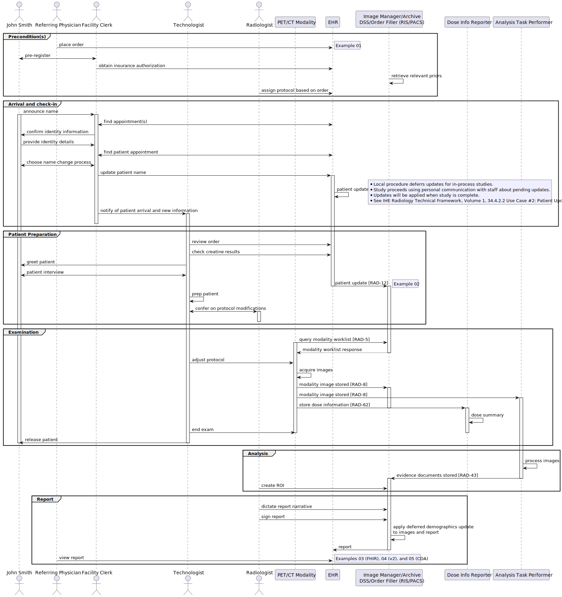

HL7 Cross Paradigm Implementation Guide: Gender Harmony - Sex and Gender Representation, Edition 1
1.0.0 - ci-build
HL7 Cross Paradigm Implementation Guide: Gender Harmony - Sex and Gender Representation, Edition 1
1.0.0 - ci-build
HL7 Cross Paradigm Implementation Guide: Gender Harmony - Sex and Gender Representation, Edition 1 - Local Development build (v1.0.0). See the Directory of published versions
This use case illustrates DICOM Sex and Gender encoding, including: admission, patient prep, examination, post processing and reporting for a PET/CT examination order. A patient with EHR Sex Parameter for Clinical Use (SPCU) of “Female-typical” and an EHR Gender Identity of “Identifies a male gender” checks-in for a PET/CT examination. The examination is performed, the patient’s demographics are updated, and the report is delivered.
In this case, there are three examples of Sex Parameter for Clinical Use (SPCU):
The DICOM (Digital Imaging and Communications in Medicine) Standard attributes in this use case are not, at time of publication of this Implementation Guide, normative, and details in DICOM are still being defined in Supplement 233. Readers interested in participating in development of DICOM Sex and Gender encoding, please contact the DICOM Secretariat.
Patient (John Smith) - whose previous records are for studies performed when his EHR Gender Identity was “Identifies as female gender”.
Referring Physician
Facility Clerk - admits patient, utilizes the Radiology Information System (RIS)
PET/CT Technologist
Radiologist
ADT, Order Placer (Hospital EHR)
Order Filler (RIS)
Modality (PET/CT System)
Image Manager/Archive (PACS: Picture Archive and Communications System)
Dose Information Reporter
Task Performer (Artificial Intelligence)
Use case covers admission, patient prep, examination, post processing and reporting for a PET/CT study.
John Smith is registered in the hospital record system under the name “Janet Smith”.
Physician places the order in the EHR for “Janet Smith”
John Smith arrives at an outpatient facility with an appointment.
Patient history, social history, medical history has already been captured and are available in the EHR under “Janet Smith”.
Prior exams for comparison are retrieved based on rules established by the radiology department, using the name “Janet Smith” (e.g., body region, patient ID, type of exam).
Technical scan and contrast administration parameters (protocol) are pre-determined based on departmental protocols for a female patient.
Example 01 depicts an HL7 Imaging Order for this patient with mapping to DICOM Modality Worklist attributes.
PET/CT study is complete.
Patient name change in the EHR has occurred.
Report is generated in the RIS and available in the EHR.
Note: IHE transactions are noted in brackets

Figure 1 Workflow Storyboard
In this scenario, the patient initiates the discussion with the clerk.
When the patient arrives at the waiting room for a PET/CT examination he announces himself as “John”.
The clerk asks “John Williams?”, seeing a John Williams in the schedule.
Patient: “No, Smith”.
Clerk: “Date of birth”?
Smith: “month, day, year”
The clerk performs a date-of-birth based lookup and finds a schedule entry for Janet Smith, with Patient’s Sex “F” and Patient’s Gender “M”, and with a Patient Names to Use “John Smith”. Sex Comment contains “Hormonal treatment, use affirmed gender Creatinine reference ranges[1]”.
The clerk confirms that the birth dates match, in accordance with local policies, and checks in the patient.
After check-in, the Scheduled Procedure Step is visible in the MWL.
The clerk asks whether John wants to go through the name change update at the clinic to reflect his preferred name. Name change is initiated.
The clerk notifies the technologist that the patient has arrived.
Example 02 depicts an HL7 Demographics Update message for this patient with mapping to DICOM Modality Worklist attributes.
The technologist checks their schedule for John, and finds the order for “Janet Smith”, Patient’s Sex “F” and Patient’s Gender “M”, and with a Patient Names to Use “John Smith”. Sex Comment contains “Hormonal treatment, use affirmed gender Creatinine reference ranges”.
The technologist greets the patient as “John” and reconfirms birthdate.
The technologist directs the patient to a changing area and instructs the patient to remove jewelry and change into a gown.
When the patient is ready, the technologist asks the necessary related preparation questions, e.g., pregnancy status, most recent menstruation, allergies, history, preferred arm for IV contrast administration, etc.
The technologist explains the procedure to the patient and answers any questions the patient may have.
Since the protocol calls for a contrast-enhanced CT, the technologist reviews the most recent eGFR, BUN and Creatinine.
The technologist confers with the radiologist to discuss acceptable lab values for safe contrast administration, given the Sex Comment, as well as the patient’s GFR, BUN and Creatinine.
The radiologist notes that the provided SPCU of Female, is not consistent with the SPCU Comment and calls the ordering physician to confirm.
After discussing patient history with the ordering physician, the radiologist provides protocol alterations based on the patient’s transgender status.
Note: The pre-identified protocol was based on a female patient (see item 8 in Precondition(s)).
The technologist knows to select the MWL entry for “Janet Smith” and expects a Patient’s Sex of “F”; this does not trigger a wrong patient concern.
Patient demographics are loaded into the scanner demographics interface.
The technologist applies alterations prescribed by the radiologist to scanner and contrast protocol. The radiotracer dose is not changed, as the department standardizes doses regardless of Patient Sex.
The technologist starts an IV, administers radiotracer, and connects the contrast injector for the contrast-enhanced CT portion of the procedure.
The study is performed.
The images and Radiation Dose Structured Report (RDSR) are transferred to the PACS, Dose Information Reporter and AI Task Performer systems.
The radiologist creates an SUV ROI on the PACS. The PACS identifies multiple items with different values in the Sex Parameter for Clinical Use Sequence (0010,xxx2), and prompts the radiologist to enter a value “M” or “F”.
The Dose Information Reporter collects the RDSR, without exception.
The AI task performer parses the Sex Parameter for Clinical Use Sequence (0010,xxx2) and identifies an Item with a Start DateTime (0010,xxx6) that matches the Patient’s Birth Date (0010,0030), having a SPCU Code Sequence (0010,xxx9) of (Sup233-01, DCM, Female typical parameter). The algorithm processes the images, applying female reference values, and transfers evidence documents to the PACS.
Note: Sex at birth is required to determine reference values for AI and non-AI machine algorithms in various domains, such as cardiology and neurology.
The radiologist dictates findings pertaining to the procedure, noting scanner and contrast protocol modifications in the “Request” section of the report.
The report format has been configured to include Patient’s Sex (0010,0040), Patient’s Gender Code (0010,xxx4).(0008,0104), Patient Name (0010,xxx3).(0010,xx12) and SPCU Comment (0010,xxx1) in the report.
Patient’s Name = “Janet Smith”
Patient’s Sex = “F”
Patient’s Gender Identity = “M”
Name to Use = “John Smith”
Patient’s Name = “John Smith”
Patient’s Sex = “F”
Patient’s Gender Identity = “M”
Name to Use = “John Smith”
The final report may be represented in FHIR, HL7 v2, or a CDA.
See these examples of HL7 v2.9.1 and v2.5 OMI Imaging Orders from precondition(s).
These map to DICOM Modality Worklist as follows:
| v2 | Attribute Name | Tag | VR | Value |
|---|---|---|---|---|
| PID-5 Name Type Code = Birth Name | Patient’s Name | (0010,0010) | PN | Smith\^Janet^^^ |
| PID-7 | Patient’s Birth Date | (0010,0030) | DA | 19780328 |
| PID-8 | Patient’s Sex | (0010,0040) | CS | F |
| Patient’s Gender | (0010,xxxx) | CS | M | |
| Gender Identity Sequence | (0010,xxxx) | SQ | ||
| >Gender Identity Code Sequence | (0010,xxx4) | SQ | ||
| GSP-5-1 | >>Code Value | (0008,0100) | SH | 446151000124109 |
| GSP-5-3 | >>Coding Scheme Designator | (0008,0102) | SH | UMLS |
| GSP-5-2 | >>Code Meaning | (0008,0104) | LO | Identifies as male gender |
| Sex Parameter for Clinical Use Sequence | (0010,xxx2) | SQ | –ITEM 1– | |
| –ITEM 1– | ||||
| >SPCU Code Sequence | (0010,xxx9) | SQ | ||
| GSC-4-1 | >>Code Value | (0008,0100) | SH | Sup233-02 |
| GSC-4-3 | >>Coding Scheme Designator | (0008,0102) | SH | DCM |
| GSC-4-2 | >>Code Meaning | (0008,0104) | LO | Male typical parameter |
| GSC-8 | >SPCU Comment | (0010,xxx1) | LT | Hormonal treatment, use affirmed gender Creatinine reference ranges |
| >Validity Period sequence | (0010,xxx5) | SQ | ||
| GSC-5-1 | >>Start DateTime | (0010,xxx6) | DT | 20220715090000 |
| –ITEM 2– | ||||
| >SPCU Code Sequence | (0010,xxx9) | SQ | ||
| GSC-4-1 | >>Code Value | (0008,0100) | SH | Sup233-01 |
| GSC-4-3 | >>Coding Scheme Designator | (0008,0102) | SH | DCM |
| GSC-4-2 | >>Code Meaning | (0008,0104) | LO | Female typical parameter |
| GSC-8 | >SPCU Comment | (0010,xxx1) | LT | Sex at birth |
| >Validity Period sequence | (0010,xxx5) | SQ | ||
| GSC-5-1 | >>Start DateTime | (0010,xxx6) | DT | 19780328000000 |
| GSC-5-2 | >>Stop DateTime | (0010,xxx7) | DT | 20220715090000 |
| Person Names to Use Sequence | (0010,xxx3) | SQ | ||
| PID-5 Name Type Code = Nickname | >Name to Use | (0010,xx12) | LT | Smith, John |
| >Validity Period Sequence | (0010,xxx5) | SQ | ||
| >Start DateTime | (0010,xxx6) | DT | 20220715090000 |
See these examplesof HL7 v2.9.1 and v2.5 ADT Demographics Updates from arrival and check-in. Note: in previous v2 versions, the first occurrence indicated the legal name. In this case, Name to Use name is listed first for legacy compatibility.
These map to DICOM Modality Worklist as follows:
| v2 | Attribute Name | Tag | VR | Value |
|---|---|---|---|---|
| PID-5 Name Type Code = Nickname | Patient’s Name | (0010,0010) | PN | Smith\^John^^^ |
| PID-7 | Patient’s Birth Date | (0010,0030) | DA | 19780328000000 |
| PID-8 | Patient’s Sex | (0010,0040) | CS | F |
| Gender Identity Sequence | (0010,xxxx) | SQ | ||
| >Gender Identity Code Sequence | (0010,xxx4) | SQ | ||
| GSP-5-1 | >>Code Value | (0008,0100) | SH | 446151000124109 |
| GSP-5-3 | >>Coding Scheme Designator | (0008,0102) | SH | UMLS |
| GSP-5-2 | >>Code Meaning | (0008,0104) | LO | Identifies as male gender |
| GSP-6-1 | >Start DateTime | (0010,xxx6) | DT | 20220715010000 |
| Sex Parameter for Clinical Use Sequence | (0010,xxx2) | SQ | ||
| –ITEM 1– | ||||
| >SPCU Code Sequence | (0010,xxx9) | SQ | ||
| GSC-4-1 | >>Code Value | (0008,0100) | SH | Sup233-02 |
| GSC-4-3 | >>Coding Scheme Designator | (0008,0102) | SH | DCM |
| GSC-4-2 | >>Code Meaning | (0008,0104) | LO | Male typical parameter |
| GSC-8 | >SPCU Comment | (0010,xxx1) | LT | Hormonal treatment, use affirmed gender Creatinine reference ranges |
| GSC-5-1 | >>Start DateTime | (0010,xxx6) | DT | 20220715090000 |
| Sex Parameter for Clinical Use Sequence | (0010,xxx2) | SQ | ||
| –ITEM 2– | ||||
| >SPCU Code Sequence | (0010,xxx9) | SQ | ||
| GSC-4-1 | >>Code Value | (0008,0100) | SH | Sup233-01 |
| GSC-4-3 | >>Coding Scheme Designator | (0008,0102) | SH | DCM |
| GSC-4-2 | >>Code Meaning | (0008,0104) | LO | Female typical parameter |
| GSC-8 | >SPCU Comment | (0010,xxx1) | LT | Sex at birth |
| >Validity Period sequence | (0010,xxx5) | SQ | ||
| GSC-5-1 | >>Start DateTime | (0010,xxx6) | DT | 19780328000000 |
| GSC-5-2 | >>Stop DateTime | (0010,xxx7) | DT | 20220715090000 |
The patient is referenced as the subject of DiagnosticReport, DocumentReference, ImagingStudy or ImagingSelection. Mapping to DICOM is as follows:
| FHIR attribute | Attribute Name | TAG | VR | Value |
|---|---|---|---|---|
| Patient.name [use=official] | Patient’s Name | (0010,0010) | PN | Smith\^John^^^ |
| Patient.gender | Patient’s Sex | (0010,0040) | CS | F |
| Patient.extension [PGenderIdentity] | Gender Identity Sequence | (0010,xxxx) | SQ | |
| >Gender Identity Code Sequence | (0010,xxx4) | SQ | ||
| Patient.extension [value code] | >>Code Value | (0008,0100) | SH | 446151000124109 |
| Patient.extension [value system] | >>Coding Scheme Designator | (0008,0102) | SH | UMLS |
| Patient.extension [value display] | >>Code Meaning | (0008,0104) | LO | Identifies as male gender |
| Patient.extension [period start] | >Start DateTime | (0010,xxx6) | DT | 20220715010000 |
| serviceRequest.extension [PatSexParameterForClinicalUse] | Sex Parameter for Clinical Use Sequence | (0010,xxx2) | SQ | |
| –ITEM 1– | ||||
| >SPCU Code Sequence | (0010,xxx9) | SQ | ||
| serviceRequest.extension [value code] | >>Code Value | (0008,0100) | SH | Sup233-02 |
| serviceRequest.extension [value system] | >>Coding Scheme Designator | (0008,0102) | SH | DCM |
| serviceRequest.extension [value display] | >>Code Meaning | (0008,0104) | LO | Male typical parameter |
| serviceRequest.extension [comment] | >SPCU Comment | (0010,xxx1) | LT | Hormonal treatment, use affirmed gender Creatinine reference ranges |
| >Validity Period sequence | (0010,xxx5) | SQ | ||
| serviceRequest.extension [period start] | >>Start DateTime | (0010,xxx6) | DT | 20220715090000 |
| serviceRequest.extension [supportingInfo reference] | >SPCU Reference | (0010,xx10) | UR | https://doi.org/10.1210/jendso/bvab048.1607 |
| –ITEM 2– | ||||
| >SPCU Code Sequence | (0010,xxx9) | SQ | ||
| serviceRequest.extension [value code] | >>Code Value | (0008,0100) | SH | Sup233-01 |
| serviceRequest.extension [value system] | >>Coding Scheme Designator | (0008,0102) | SH | DCM |
| serviceRequest.extension [value display] | >>Code Meaning | (0008,0104) | LO | Female typical parameter |
| serviceRequest.extension [comment] | >SPCU Comment | (0010,xxx1) | LT | Sex at birth |
| >Validity Period sequence | (0010,xxx5) | SQ | ||
| serviceRequest.extension [period start] | >>Start DateTime | (0010,xxx6) | DT | 19780328000000 |
| serviceRequest.extension [period end] | >>Stop DateTime | (0010,xxx7) | DT | 20220715090000 |
| Person Names to Use Sequence | (0010,xxx3) | SQ | ||
| Patient.name[use=usual] | >Name to Use | (0010,xx12) | LT | John Smith |
See these examples of HL7 v2.9.1 and v2.5 Unsolicited Observation Results containing the narrative from the final Imaging Report.
OBX Segments containing Imaging Report Narrative omitted for brevity
See this example of a CDA Imaging Report.
IG © 2022+ HL7 Terminology Infrastruture Work Group. Package hl7.xprod.uv.gender-harmony#1.0.0 based on FHIR 5.0.0. Generated 2023-11-21
Links: Table of Contents |
QA Report
| Version History |
 |
Propose a change
|
Propose a change